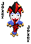

🃏 JOKER TABLE
PIXEL CARD CLUB
🔊 소리 켜짐
도둑
잡기
친구들과 함께, 또는 AI와 혼자서! 최대 6인 카드 게임
닉네임
방 만들기 · 싱글 / 멀티
초대 코드 입장
싱글플레이는 방을 만든 다음 AI를 추가하면 돼요.
게임 대기실
-----
🔗 초대 링크 복사
친구와 AI를 합쳐 최대 6명까지 참가할 수 있어요.
＋ AI 추가
－ AI 제거
🂠 카드 섞고 게임 시작
나가기
ROUND
1
방 코드
카드를 섞는 중
나가기
버린 카드 0장
✦ ♠ ♥ ♣ ✦
다른 플레이어를 기다리는 중...
승 0 · 패 0 · 연승 0
상대 카드 클릭 → 뽑기
🃏
게임 종료
다시 플레이
방 나가기
THE LAST JOKER

조커의 주인